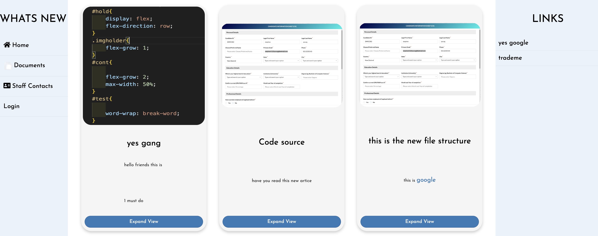

Flask Intranet Web App
Description
This web project was done for Hamilton Radiology last year, This intranet was designed for staff to see newsletters and get contact details of other stuff members. I was the solo full-stack developer on this project. I had regular meetings to ensure the intranet met the web site specifications as well as stream line the process for existing staff who where struggling with the old intranet. This intranet was heavily focused on being as user-friendly as possible.
Technologies Used
- SQL
- Jinja
- Python
- JavaScript
- HTML
- CSS
- Boot Strap library
Fetures
- Image uploading
- Asynchronous requests for hot reloading and passing variables to the backend
- Sorting Contacts
- Rich text editor
- Sign in capability
- Constructed SQL databases